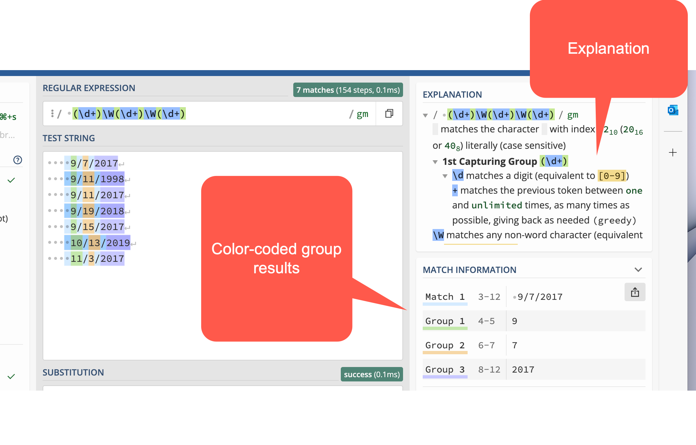
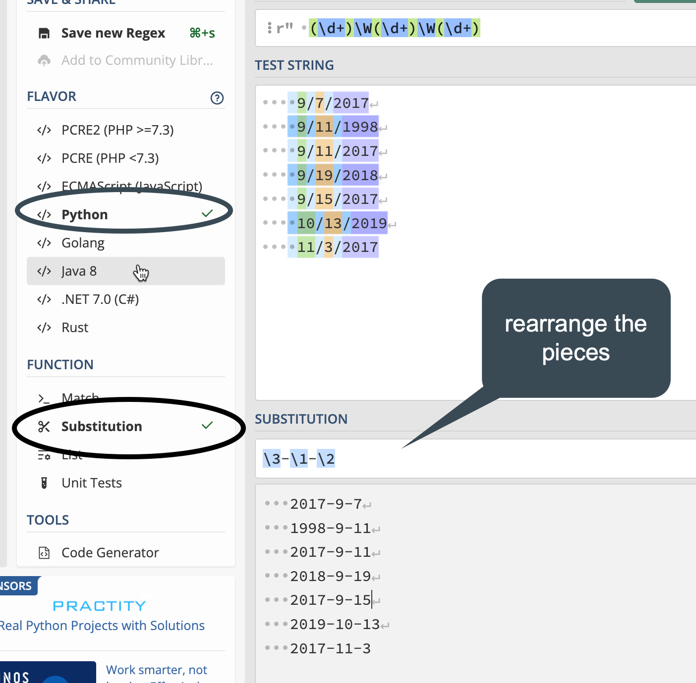

22 Regular expressions Part I
This is the beginning of a two-chapter subsection on working with text values. This chapter introduces you to the concept of regular expressions or pattern matching. The next chapter introduces you to the stringr library, which is part of the tidyverse, as a way to examine and work with character data, including the use of regular expressions in R.
In computer-ese, “strings” are character values, which can be as simple as a single letter to an entire document or book. There is no limit on what a string can contain – letters, numbers, punctuation, special characters, and even emojis. Anything that has an equivalent on your keyboard is considered a character, and any combination of characters is considered a string. (This means that images are NOT strings per se, but numbers are.)
A regular expression searches strings for patterns rather than exact characters. Examples include:
- Extracting a phone number or date from a longer string.
- Finding phrase variations when you aren’t sure what they might look like.
- Isolating the first word of a sentence or phrase
- Finding the city and zip code from an address
Regular expressions are hard to write and to read, but if you get relatively good at them, you will have a new super power.
Two other good tip sheets on regular expressions are:
- From Justin Meyer at a recent IRE conference that can serve as a guide.
- From Prof. Christian McDonald of UT-Austin. Some of the examples here are drawn from Prof. McDonald’s tip sheet.
Sample data
The following sample data will be used in this lesson:
- A list of phone numbers in different formats
- A list of addresses that are in multiple lines, and you need to pull out the pieces. (Courtesy of Prof. McDonald through IRE)
22.1 Building blocks of regular expressions
Literal strings
These are just letters, words or precise phrases like “abc” or “Mary”. They are case-sensitive by default.
Some characters are used as special instructions in regular expressions and have to be “escaped” by adding backslash in front of them. Three of the most common are:
- periods (\.)
- question marks (\?),
- and parentheses
\(
So if you want to search for Patriot Front (USA), you’d need to type Patriot Front \(USA\).
In fact, these escape characters can get unweildy, so in the next chapter you’ll see a way to make it a little easier to read.
Start or end with…
^ = “Find only at the beginning of a line”
$ = “Find only at the end of a line”
Wild cards and quantifiers
A wild card is a character you use to indicate the word “anything”. Here are some ways to use wild cards in regex.
| Regex | What it means |
|---|---|
. (a period) |
Any single character of any type |
? |
Might or might not exist |
* (asterisk) |
Any number of times repeated, including none. One of the most common patterns is .*, which means “anything or nothing”, the equivalent of the “%” you used in str_like() |
+ |
Exists one or more times. |
| {1,3} | Exists between 1 and 3 times (change the number to change the repetition) |
Regular expressions also have wild cards of specific types. These are called “character classes” and are often what makes regular expressions so powerful. Here are some common character classes. When you begin to learn a new language, you’ll look up what the character classes are in that implementation of regular expressions.1
| Class code | What it means |
|---|---|
\d |
Any digit |
\w |
Any word character. This is upper or lowercase letters, numbers and an underscore |
\s |
Any whitespace (tab, space, etc.) |
\b |
Any word boundary (period, comma, space, etc.) |
\n |
A new line – carriage return or line feed. |
These can be negated by upper-casing them. For example ‘\D’ means anything EXCEPT a digit.
There are other, more complicated codes for punctuation, special characters like emojis, and others.
You can define your own character classes by enclosing them in brackets: []. This can be particularly useful in searching for alternative spellings or abbreviations. For example, in R, the work “summarize” is spelled both using the American and British method. To look for either spelling, you could write summari[zs]e
Alternation and precedence
“Alternation” is a fancy way of saying “either or”, and “precedence” is a fancy way of saying “this before that”. They often go together in regular expressions.
|= Alternation, or “OR”, the same character you use in filters.
() = precendence (and grouping) operators
It’s easy to use alternation when it’s a simple word or phrase. But usually, it’s a little more complex and you have to tell the regex what portion of the pattern is the either-or. An example is looking for a year. 19|20\d\d won’t work – it gets either 19, or 20xx. Instead, (19|20)\d\d will give you the full year.
Parentheses are also used for “capture groups”, which lets you re-use what you found later on, such as replacing part but not all of a string.
22.2 Testing and examining patterns with Regex101
Regex 101 is a website that lets you copy part of your data into a box, then test different patterns to see how they get applied. Regular expressions are very difficult to write and to read, but Regex101 lets you do it a little piece at a time.
Looking for specific words or characters
The easiest regex is one that has just the characters you’re looking for when you know that they are the right case. They’re called literals because you are literally looking for those letters or characters.
Type “Mary had a little lamb” into the Test String box, then type “little” into the Regular Expression box. You should get something like this, showing the match that was found and and explanation of the results. The flags here are not very important right now.

22.3 Practice #1: Extract date parts
If you think about it, figuring out the pieces of American-style dates can be difficult: The year is at the end, and there sometimes are no leading zeroes in front of the month and year.2 This part of the lesson will show you how to isolate pieces of dates using regular expressions.
Copy and paste these dates into the regex 101 window:
9/7/2017
9/11/1998
9/11/2017
9/19/2018
9/15/2017
10/13/2019
11/3/2017Get the year
Try to think of three ways to isolate the year. They might include words begining with “19” or “20”, or the last four characters of the string, or four digits after a non-digit.
Possible answers:
\d+$
\D\d{4}
[0-9]*$
(19|20)\d\d
Examine the output in the regex101 window to see how it found (or didn’t find!) your year.
Using capture groups to rearrange the dates
Using capture groups in parentheses, try to isolate each of the pieces of the date. Then click on the menu bar to open the substitution section. Here, you’ll see how to isolate pieces of the date, then rearrange it into year-month-day. (It’s still not great - you’d need to do some more munging to add a leading zero to the month and day, but for now this is good practice. )
Try coming up with the rest of it on your own before you type in the answer:
(\d+)\W(\d+)\W(\d+)
Now each piece has its section, numbered 0 for the whole match, and then 1-3 for the pieces.

22.4 Practice #2: Extract pieces of phone numbers
Here are some phone numbers in different formats:
623-374-1167
760.352.5212
831-676-3833
(831)-676-3833
623-374-1167 ext 203
831-775-0370
(602)-955-0222 x20
928-627-8080
831-784-1453This is a little more complicated than it looks, so try piecing together what this one says:
(\d{3})\D+(\d{3})\D+(\d{4})Anything within parentheses will be “captured” in a block.
22.5 Practice #3: Extract address pieces
Here are a few lines of the data from Prof. McDonald’s tutorial, which you can copy and paste to go his exercise. (He uses the Javascript version of regular expressions, but for our purposes in this exercise, it doesn’t matter which one you use. If you choose Python, you’ll have one extra step, of putting a slash () before the quotes. The colors work a little better if you leave it on the default PHP method.)
"10111 N LAMAR BLVD
AUSTIN, TX 78753
(30.370945933000485, -97.6925542359997)"
"3636 N FM 620 RD
AUSTIN, TX 78734
(30.377873241000486, -97.9523496219997)"
"9919 SERVICE AVE
AUSTIN, TX 78743
(30.205028616000448, -97.6625588019997)"
"10601 N LAMAR BLVD
AUSTIN, TX 78753
(30.37476574700048, -97.6903937089997)"
"801 E WILLIAM CANNON DR Unit 205
AUSTIN, TX 78745
(30.190914575000477, -97.77193838799968)"
"4408 LONG CHAMP DR
AUSTIN, TX 78746
(30.340981111000474, -97.7983147919997)"
"625 W BEN WHITE BLVD EB
AUSTIN, TX 78745
(30.206884239000487, -97.7956469989997)"
"3914 N LAMAR BLVD
AUSTIN, TX 78756
(30.307477098000447, -97.74169675199965)"
"15201 FALCON HEAD BLVD
BEE CAVE, TX 78738
(30.32068282700044, -97.96890311999965)"
"11905 FM 2244 RD Unit 100
BEE CAVE, TX 78738
(30.308363203000454, -97.92393357799966)"
"3801 JUNIPER TRCE
BEE CAVE, TX 78738
(30.308247975000484, -97.93511531999968)"
"12800 GALLERIA CIR Unit 101
BEE CAVE, TX 78738
(30.307996778000472, -97.94065088199966)"
"12400 W SH 71 Unit 510
BEE CAVE, TX 78733
(30.330682136000462, -97.86979886299969)"
"716 W 6TH ST
AUSTIN, TX 78701
(30.27019732500048, -97.75036306299967)"
"3003 BEE CAVES RD
ROLLINGWOOD, TX 78746
(30.271592738000436, -97.79583786499967)"Examine each of the lines to see what you want to extract. In our case, the relevant things to notice are:
- Each of the addresses starts and ends with a quotation mark. This makes it easy to find the beginning of each address.
- The city names are in upper case, followed by a comma, a space, and the state abbreviation.
- The zip code comes at the end of a line, is all numerals, and is preceded by a space.
This process of identifying the consistency and inconsistency in data is useful not only in building regular expressions, but in data cleaning in general. We’ll see how that works when we get to OpenRefine later on.
- Find the Zip Code for each line.
- Find the city names as a list
- Find the latitude (the first large number in the coordinates)
See if you can make substitutions so that you get a list of addresses in a single line, without the latitude and longitude, such as “12400 W SH 71 Unit 510 BEE CAVE, TX 78733”
This process is not as outlandish as it seems. It’s quite frequent that you get lists of addresses on separate rows, but you need to import them into a data frame as a single (or “parsed” set of rows.
I often do the initial process of using regular expressions to fix problems like this in OpenRefine, which is designed for data cleanup. A future lesson will introduce you to that free software.